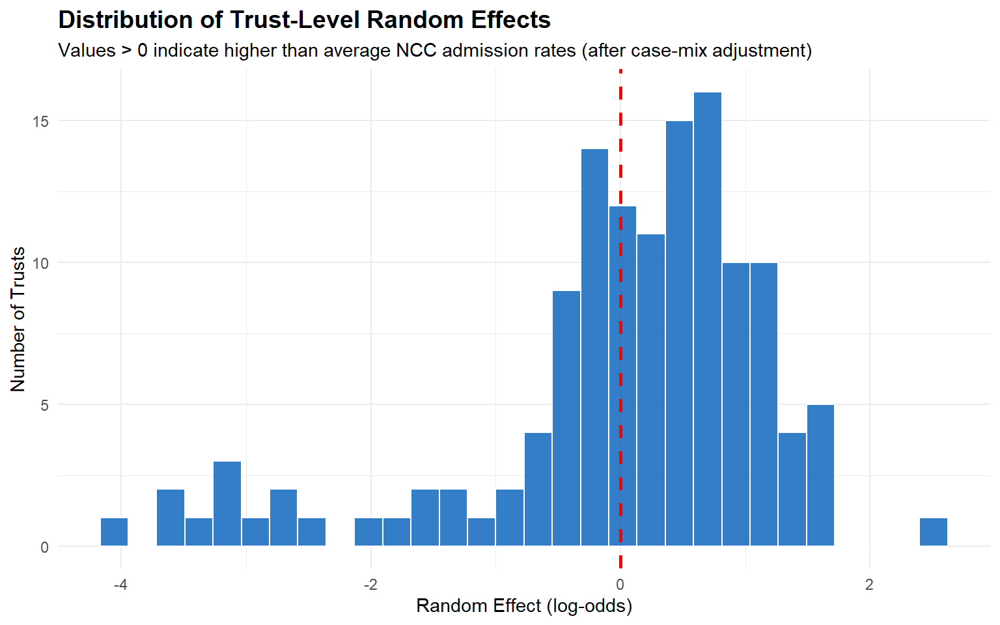
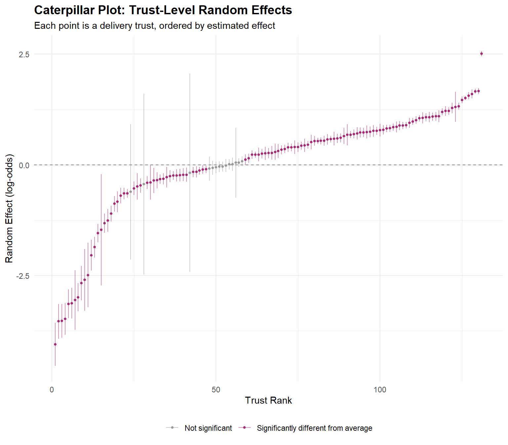

| Variable | Odds Ratio | 95% CI | p-value | |
|---|---|---|---|---|
| Clinical | ||||
| Gestation (per week) | 0.654 | (0.651, 0.657) | <0.001 | *** |
| Ethnicity (ref: White British) | ||||
| Ethnicity: White Other | 0.770 | (0.744, 0.795) | <0.001 | *** |
| Ethnicity: Mixed | 0.876 | (0.843, 0.909) | <0.001 | *** |
| Ethnicity: Indian | 0.885 | (0.847, 0.925) | <0.001 | *** |
| Ethnicity: Pakistani | 0.713 | (0.681, 0.746) | <0.001 | *** |
| Ethnicity: Bangladeshi | 0.715 | (0.662, 0.77) | <0.001 | *** |
| Ethnicity: Other Asian | 0.871 | (0.823, 0.921) | <0.001 | *** |
| Ethnicity: Black | 0.925 | (0.89, 0.962) | <0.001 | *** |
| Ethnicity: Chinese | 0.608 | (0.507, 0.724) | <0.001 | *** |
| Ethnicity: Other | 0.723 | (0.677, 0.771) | <0.001 | *** |
| Deprivation (ref: Least Deprived) | ||||
| IMD: 4 | 0.988 | (0.957, 1.021) | 0.486 | |
| IMD: 3 | 1.013 | (0.981, 1.046) | 0.447 | |
| IMD: 2 | 1.031 | (0.999, 1.064) | 0.055 | |
| IMD: 1 - Most deprived | 1.022 | (0.991, 1.054) | 0.163 | |
Inequalities in Access to Neonatal Critical Care: Phase 1 Modelling Results
TipWhat changed in this revision (June 2026)
This draft responds to feedback from Anna Everton and Katharine Robbins. Changes in this report:
- [K3] Clarified that the cohort is babies born in 2023/24, not continuing-stay (see Study Population).
- [K5a] Rewrote Variable selection around causal role (confounder / exposure / mediator), with a table of all candidate variables considered and why each was kept, deferred, or excluded — plus why a data-driven search (stepwise/LASSO) is the wrong tool for a causal access question.
- [A1] Rewrote the Chinese-group key message in plain language (see Key Messages).
- [A3a] Reframed the Deprivation finding around the unmeasured-need vs genuine-access question.
- [A3b] New direct check of the morbidity-proxy hypothesis: preterm, very-preterm and low-birth-weight rates all rise monotonically with deprivation, and term low birth weight nearly doubles — supporting the unmeasured-need reading of the deprivation gradient.
- [A4] New funnel plot of case-mix-adjusted admission rates, with a contextualised outlier table.
- [A4b] New completeness diagnostic for the funnel outliers, responding to the follow-up question of whether their position reflects completeness of records or of specific fields. Answer: neither — the signal sits in the PbR-CC numerator, and the earlier “referral activity + reporting gap” reading has been withdrawn.
- [A2] New test for trusts where Black admission is significantly lower than White.
- [K4] New broad MBRRACE-comparable ethnicity grouping presented alongside the detailed one: the primary model refitted with the five broad ONS groups, with a comparison figure showing what the aggregation conceals (the within-Asian spread and the Chinese finding).
- Editorial pass (July 2026): tightened the executive summary and interpretation sections, removed duplicated ICC discussion, fixed typos, and aligned the key messages here and in the overview report with the revised findings.
(This box is temporary review scaffolding and will be removed before final publication.)
1 Executive Summary
This report asks one question of ~476,000 English hospital births in 2023/24: after accounting for how sick a baby is, does access to neonatal critical care (NCC) differ by ethnicity or deprivation? We answer it with hierarchical logistic regression — a primary model adjusting for gestation, and a sensitivity model additionally adjusting for birth weight and Apgar score — with each delivery trust given its own baseline admission rate.
Key findings:
- Clinical need dominates admission. Each week of gestation reduces the odds of NCC admission by ~38%; each kg of birth weight by ~9%; each Apgar point by ~36%. Ethnicity and deprivation effects are small by comparison — the system looks need-led on its central question.
- No evidence of under-admission for Black babies. Odds ratios of ~1.04 in both the primary and sensitivity models — essentially parity with White British, despite higher average clinical need.
- Pakistani and Chinese groups show lower recorded NCC odds. Pakistani moves to near-parity once birth weight and Apgar are added — largely a case-mix story. Chinese remains ~24% lower after adjustment; several explanations are plausible (residual case-mix, upstream maternal risk, statistical fragility, under-recording) and this data cannot separate them.
- The deprivation gradient is robust and looks like need. ~9.4% higher odds for most vs least deprived, stable after clinical adjustment. A direct morbidity check supports reading this largely as unmeasured clinical need: preterm and low-birth-weight rates rise steadily with deprivation, and low birth weight among term births — need the model cannot see — nearly doubles from least to most deprived.
- Between-hospital variation is large but cannot be read at face value. The trust-level ICC of 31.7% is the dominant residual signal, but it bundles practice with reporting: the CC source captures roughly 3.8 times more NCC admissions than MSDS alone, and completeness varies by provider. The funnel-outlier diagnostic gives concrete evidence for the reporting component — the most extreme trusts record NCC for 21–40% of their term babies (~7% nationally), a coding signature, not an admission-practice one.
- Data completeness is itself a core finding. Birth weight and Apgar are jointly complete for under half the cohort, and what providers count as an “NCC day” in returns evidently varies. Both belong in the recommendations.
1.1 Key Messages
Between-trust variation is the largest residual signal (ICC ~32%), but with this dataset alone we cannot separate practice variation from data-completeness variation. The MSDS source captures only ~26% of the NCC admissions visible in PbR-CC, and submission completeness varies between providers — some apparent provider effects may be reporting artefacts rather than admission-policy differences. The funnel-outlier diagnostic (see Hospital Variation) now shows this concretely: all four statistical outliers share a term-heavy, short-stay numerator signature consistent with over-broad NCC coding in the PbR-CC return, not a different admission threshold. We cluster at trust rather than site level (see Methods), which absorbs within-trust between-site variation into the residual; the ICC is therefore a slightly conservative estimate of true between-hospital variation.
The fully-adjusted (sensitivity) model is the conceptually preferred specification. After adjusting for gestation, birth weight and Apgar, ethnicity ORs change non-trivially compared with the gestation-only primary model (Pakistani 0.89→0.97; Indian 1.05→1.16). The primary model’s larger sample comes at the cost of unadjusted clinical case-mix.
Recorded NCC access for Black babies appears close to White British in both models (OR ~1.04 in both primary and sensitivity). This is a single-aspect finding about admission rates, not about the wider quality of care received.
The Chinese group shows about 24% lower odds of recorded NCC admission than White British babies, even after adjusting for gestation, birth weight and Apgar — though in the smaller sensitivity sample this sits at the boundary of conventional significance. This is not, by itself, evidence that Chinese babies are under-served: at least four explanations are consistent with it, and we cannot separate them with this data.
- Lower genuine need. Our clinical adjustment is imperfect. Chinese babies tend to be a little smaller at term without being clinically compromised, and a single linear birth-weight term may not fully capture that — so part of the gap may be appropriate rather than a shortfall.
- Different upstream maternal risk. Differences in maternal age, parity or rates of high-risk pregnancy could mean proportionally fewer babies reach the threshold for NCC.
- Statistical fragility. Chinese is one of the smaller ethnic groups, so the estimate is less stable, and once we correct for testing many groups at once the strength of evidence is weaker than the raw odds ratio suggests.
- Under-recording. Some genuine NCC episodes for this group may simply not be captured in the two administrative sources we use, which would understate the true rate.
Telling “lower need” apart from “lower access or recording” would need richer clinical data or direct engagement with providers (see Recommendations).
These results address whether a baby is admitted, not when. A planned Phase 2 survival analysis (timing of admission) is on hold pending access to a data environment that includes baby date of birth.
2 Methods
2.1 Study Population
Primary analysis: 476,475 hospital births in England during financial year 2023/24 with complete data on NCC admission, gestation, ethnicity, IMD quintile, and delivery trust.
Sensitivity analysis: 218,886 births (45.9% of primary sample) with additional complete data on birth weight and Apgar 5-minute score.
The cohort is defined by birth in 2023/24, not by NCC activity in 2023/24. Babies enter on the basis of their MSDS birth record (the financial year is derived from year and month of birth); a baby born before April 2023 who continued a neonatal stay into the study year is not included. Critical-care linkage then looks outward from each birth — and is permitted to reach about 30 days into 2024/25 — so that NCC admissions for babies born late in March 2024 are not under-counted; but the linkage never pulls earlier-born babies into the cohort.
2.2 Outcome definition (NCC_Admitted)
The outcome flags whether a baby has care recorded as Neonatal Critical Care in either of the two available administrative sources: MSDS MSD402 (provider-submitted neonatal admission records) or PbR-CC (the Payment-by-Results critical-care daily extract, filtered to CC_Type = 'NCC'). A baby is NCC_Admitted = 1 if they appear in either source. The two sources do not agree perfectly: the CC source records roughly 3.8 times more NCC admissions than MSDS alone, and submission completeness for both sources varies between providers. The outcome should therefore be read as “received care recorded as NCC” rather than as a clinically-curated definition of admission to a neonatal critical care cot.
2.3 Cohort filter and deprivation vintage
Two further constraints apply to the primary cohort:
- Hospital births only. The cohort is restricted to babies whose mother has a recorded MSD301 hospital labour-delivery spell (
Mother_Admission_Date IS NOT NULL). This is consistent with the study’s “hospital births in England” frame, but it excludes home births and any births where the labour record did not link in MSDS — the latter is not random across providers. - IMD 2015 vintage. The deprivation field used (
IMD_Decile_2015) is derived from the 2015 release of the English Indices of Deprivation. IMD 2019 is now the current vintage, and a 2025 release is anticipated. Some areas have reclassified noticeably since 2015. Findings should be interpreted as applying to the 2015 deprivation classification of the mother’s recorded address.
2.4 Variable selection
This is a causal estimation problem, not a prediction problem, and that distinction governs the whole approach to selecting variables. The aim is not to predict NCC admission as accurately as possible; it is to estimate the association of ethnicity and deprivation with admission conditional on clinical need. The two goals select variables on entirely different grounds — and conflating them is the most common source of error in this kind of analysis.
Because the goal is causal, each candidate variable is judged first on its causal role in relation to the question, and only then on whether it is usable:
- Causal role. A variable is an exposure of interest (ethnicity, IMD — the inequalities we want to measure), a confounder of need (clinical case-mix that we must adjust for so that “conditional on need” is meaningful), a mediator (something on the causal pathway from the exposure to admission — which we must not adjust for if we want the total effect; doing so is the “Table 2 fallacy”), or a collider (adjusting for which would open bias). Confounders are candidates for adjustment; exposures are the dimensions of interest; mediators and colliders are deliberately left out, however predictive they are.
- Clinical relevance. Among confounders, how strongly the variable drives genuine NCC need.
- Completeness. Whether it is recorded for enough of the cohort to use without shrinking or biasing the sample. A near-complete weak confounder can be preferable to a strong but half-missing one, because the latter forces either a smaller complete-case sample or imputation. This is exactly the gestation-versus-birth-weight trade-off below.
- Collinearity. Correlation among the adjustment variables. Collinearity inflates the variance of the correlated coefficients themselves, but it does not bias the ethnicity/IMD estimates unless a covariate is collinear with ethnicity or IMD. So correlated clinical measures are a reason for parsimony, not a threat to the headline estimates.
2.4.1 Why not a data-driven search (stepwise / LASSO)?
Algorithmic selection — stepwise regression, LASSO, and similar — optimises predictive fit and is blind to causal role. Such a procedure would happily adjust for a mediator (biasing the exposure estimate toward the null), or drop a true confounder because it is collinear with another. For a causal access question this is the wrong tool: it answers “what predicts admission?” when we are asking “is admission equitable conditional on need?”. Selection here is therefore pre-specified on clinical and causal grounds by design. Where robustness to the adjustment set matters, the appropriate check is not a data-driven search but a small set of pre-specified alternative specifications (see Recommendations).
2.4.2 Candidate variables considered
The table sets out the variables that were considered, their likely causal role, whether they are present in the current extract, and the resulting decision. “In extract?” distinguishes additions that are available now from those that would need a dataset rebuild.
| Variable | Likely role | In extract? | Decision and rationale |
|---|---|---|---|
| Gestational age | Confounder (need) | Yes | In, primary. Dominant driver of need; recorded for almost every birth, so it anchors the model on the full sample. |
| Birth weight | Confounder (need) | Yes | In, sensitivity only. Adds genuine signal beyond gestation (small-for-gestational-age), but only ~46% complete; confined to the sensitivity model to avoid shrinking the primary sample. |
| Apgar (5-min) | Confounder (need) | Yes | In, sensitivity only. Captures acute intrapartum compromise — a partly distinct axis from prematurity. Same completeness constraint as birth weight. |
| Apgar (1-min) | Confounder (need) | Yes | Excluded. Very highly collinear with the 5-minute score, which is the more prognostic and standard measure; little marginal information. |
| Baby sex | Confounder (weak) | Yes | Candidate to add now. Males carry modestly higher risk; near-complete. Cheap robustness addition; unlikely to move the headline estimates. |
| Birth order / plurality | Confounder (need) | Yes (Birth_Order) |
Candidate to add now. Multiple births are a major driver of prematurity with different ethnicity/deprivation distributions; worth testing as a covariate. |
| Unit type (NICU / LNU / SCBU) | Structural confounder | Derivable | Candidate to add now. Admission probability depends heavily on whether the baby was born in a unit with tertiary cots. Currently absorbed into the trust random effect; could be made explicit via the NNAP unit mapping. |
| Delivery method | Mediator / collider | Yes | Excluded by design. Plausibly downstream of fetal compromise (compromise → emergency caesarean → NCC); adjusting for it would bias the access estimate. |
| Complex social factors / employment / disability (at booking) | Part of the exposure construct | Yes | Excluded by design. Arguably components of the deprivation/inequality construct rather than confounders; adjusting for them could regress away part of the very inequality being measured. |
| Smoking at booking (CQIM) | Confounder, partly mediator of IMD | No — rebuild | Future. Strong driver of growth restriction and preterm birth, but correlated with deprivation, so partly on the IMD pathway. A natural addition; needs extraction. |
| Maternal BMI / parity | Confounder (need) | No — rebuild | Future. Plausible upstream confounders; need extraction. |
| Maternal age | Confounder (need) | No — blocked | Future. U-shaped risk and a confounder for both exposures, but the source date-of-birth field is missing in this environment. |
| Gestational diabetes / hypertension / pre-eclampsia | Confounder (need) | No — rebuild | Future. Drive prematurity and NCC need; need extraction. |
| Postpartum haemorrhage (CQIM) | Maternal outcome (not a clean confounder) | No — rebuild | Future, descriptive only. A maternal intrapartum outcome largely downstream of the determinants of the baby’s need; its link to neonatal CC is weak and via shared causes. Worth a descriptive look, but not a case-mix adjustment. |
| Congenital anomaly | Confounder / part-outcome | No — rebuild | Future, with caution. A strong driver of admission, but MSDS ascertainment is poor and it is arguably part outcome rather than pure case-mix. |
| Ethnicity (disaggregated) | Exposure | Yes | In. The granularity itself is a finding (within-Asian heterogeneity). A broad MBRRACE-style grouping is presented alongside for comparability and small-number stability. |
| IMD quintile | Exposure | Yes | In. Area-level deprivation of the mother’s recorded address (2015 vintage; see above). |
| Delivery trust | Random effect | Yes | In. Random intercept; see Random-effect Grouping. |
In short, the primary model deliberately carries the need signal on gestation alone — the one near-complete clinical confounder — adds the two exposures of interest, and leaves the trust structure to the random intercept. The sensitivity model adds birth weight and Apgar where they are observed. The remaining candidates are excluded either by causal role (mediators, colliders, and components of the exposure construct) or by data availability (factors awaiting a dataset rebuild), and are picked up as future work rather than omitted for convenience.
2.5 Statistical Approach
We fitted three models:
Model 1 (Fixed effects only): Standard logistic regression adjusting for gestation, ethnicity, and deprivation. Included as a stepping-stone reference.
Model 2 (Mixed effects, gestation only): Hierarchical logistic regression with random intercepts for delivery trust, adjusting only for gestation among clinical covariates \[\text{logit}(P[\text{NCC}]) = \beta_0 + \beta_1 \text{Gestation} + \beta_2 \text{Ethnicity} + \beta_3 \text{IMD} + u_j\] where \(u_j \sim N(0, \sigma^2_u)\) represents the random effect for delivery trust \(j\). Reported because it uses the maximum sample size (gestation is near-completely observed).
Model 3 (Mixed effects, full clinical adjustment): Adds birth weight and Apgar 5-minute score to Model 2’s specification \[\text{logit}(P[\text{NCC}]) = \beta_0 + \beta_1 \text{Gestation} + \beta_2 \text{BirthWeight} + \beta_3 \text{Apgar} + \beta_4 \text{Ethnicity} + \beta_5 \text{IMD} + u_j\]
Conceptually Model 3 is the preferred specification — it adjusts for the clinical case-mix that drives NCC need rather than relying on gestation alone — and we lead the interpretation with its results. Model 2 is reported in parallel because of its larger sample (gestation is observed for nearly all births, whereas birth weight and Apgar are observed for 45.9% of the primary sample). Where the two models disagree (notably for Pakistani and Indian ethnic groups), the disagreement itself is informative and is discussed below.
2.6 Birth Weight Data Source
The sensitivity model uses birth weight from MSDS only (Birth_Weight_Grams), not the combined MSDS+CC variable. This avoids differential missingness bias: the CC data has 94% birth weight completeness for NCC babies vs 46% for non-NCC babies, which would artificially inflate NCC rates in complete cases.
2.7 Random-effect Grouping
The hierarchical models cluster babies at the level of the submitting NHS trust (3-letter provider code), not the individual delivery site (5-letter code). Two practical considerations drove this:
Coverage. MSDS populates the site-of-delivery field (
Org_Site_ID_Actual_Place_Delivery) for ~83% of babies; the remaining ~17% have no site recorded but do have a submitting-trust code (OrgCodeProvider) populated for 100% of records. The no-site cohort is concentrated in 15 large multi-site trusts and is not random with respect to outcome (NCC rate 14.2% vs 11.5% in the with-site cohort), ethnicity (more Pakistani, fewer Indian) or deprivation. Excluding it on a missing-site filter would bias the model.Hierarchy. Site codes (e.g.
RYJ01) sit administratively inside trust codes (e.g.RYJ). Treating “RYJ01” babies and “RYJ-trust-only” babies as independent random-effect groups would double-count trust-level variance and break the exchangeability assumption. Clustering at trust level for everyone keeps a single consistent rung.
The grouping variable is constructed as Delivery_Trust = coalesce(LEFT(Delivery_Site_Code, 3), Submitting_Org_Code), then used as the random-intercept term (1 | Delivery_Trust). For multi-site trusts (Imperial, Leicester, Barts, etc.), within-trust between-site variation is folded into the residual rather than the random effect; the reported ICC is therefore a slightly conservative estimate of between-hospital variation.
2.7.1 Why mixed effects?
A standard regression would treat all 500,000+ babies as independent draws from one giant, uniform hospital. They are not: babies are clustered within trusts, and the baseline likelihood of NCC admission varies widely between trusts — through clinical thresholds, local capacity and reporting practice. Ignoring that clustering has two costs. It understates uncertainty (babies within a hospital partly repeat the same hospital-level information), and it can generate false findings: if an ethnic group happens to be concentrated around hospitals that admit (or report) more, a standard model would attribute the hospital’s behaviour to the group.
The mixed-effects model fixes this by giving each trust its own baseline admission rate (a “random intercept”), with the trust baselines treated as draws from a common distribution. The patient-level effects — ethnicity, deprivation, clinical need — are then estimated with the hospital baseline held constant. So when we report that the most deprived quintile has 9.4% higher odds of admission, it means: for two clinically identical babies born in the same trust, the baby from the most deprived area is 9.4% more likely to be admitted.
3 Results
3.1 Model 1: Fixed Effects Logistic Regression
We start with a standard logistic regression on the full sample — a reference point and stepping stone to the mixed-effects models.
3.1.1 Odds Ratios
Significance: *** p<0.001, ** p<0.01, * p<0.05
3.2 Model 2: Mixed Effects Logistic Regression
The mixed effects model adds random intercepts for delivery trust, allowing each provider to have its own baseline NCC admission rate.
3.2.1 Fixed Effects (Odds Ratios)
| Variable | Odds Ratio | 95% CI | p-value | p (BH-adj) | |
|---|---|---|---|---|---|
| Clinical | |||||
| Gestation (per week) | 0.619 | (0.616, 0.622) | <0.001 | — | *** |
| Ethnicity (ref: White British) | |||||
| Ethnicity: White Other | 0.924 | (0.892, 0.958) | <0.001 | <0.001 | *** |
| Ethnicity: Mixed | 0.942 | (0.905, 0.981) | 0.004 | 0.008 | ** |
| Ethnicity: Indian | 1.054 | (1.005, 1.105) | 0.032 | 0.048 | * |
| Ethnicity: Pakistani | 0.889 | (0.845, 0.935) | <0.001 | <0.001 | *** |
| Ethnicity: Bangladeshi | 1.060 | (0.976, 1.15) | 0.169 | 0.19 | |
| Ethnicity: Other Asian | 1.013 | (0.954, 1.074) | 0.679 | 0.679 | |
| Ethnicity: Black | 1.037 | (0.994, 1.082) | 0.089 | 0.115 | |
| Ethnicity: Chinese | 0.695 | (0.578, 0.835) | <0.001 | <0.001 | *** |
| Ethnicity: Other | 0.926 | (0.865, 0.991) | 0.027 | 0.048 | * |
| Deprivation (ref: Least Deprived) | |||||
| IMD: 4 | 1.016 | (0.981, 1.051) | 0.383 | 0.383 | |
| IMD: 3 | 1.063 | (1.027, 1.1) | <0.001 | <0.001 | *** |
| IMD: 2 | 1.108 | (1.071, 1.147) | <0.001 | <0.001 | *** |
| IMD: 1 - Most deprived | 1.101 | (1.064, 1.14) | <0.001 | <0.001 | *** |
| BH-adjusted p-values are computed within each test family separately (9 ethnicity contrasts; 4 IMD contrasts). | |||||
3.2.2 Forest Plot: Ethnicity and Deprivation

3.2.3 Random Effects: Hospital Variation
| Metric | Value |
|---|---|
| Random effect variance (delivery trust) | 1.5236 |
| Random effect SD | 1.2343 |
| Intraclass Correlation (ICC) | 0.3165 |
| Number of delivery trusts | 131.0000 |
NoteInterpreting the ICC
The Intraclass Correlation Coefficient (ICC) of 0.317 means that approximately 31.7% of the unexplained variation in NCC admission (after accounting for gestation, ethnicity and deprivation) sits between delivery trusts rather than between babies. This is the largest residual signal in the model — but it bundles clinical practice, capacity, case-mix and reporting differences together. What it can and cannot be taken to mean is unpacked in the Interpretation section (Hospital Variation).
Because we cluster at trust rather than site level, within-trust between-site variation is absorbed into the residual; the ICC is a slightly conservative estimate of between-hospital variation.
3.2.4 Distribution of Hospital Effects


3.2.5 Funnel Plot: Case-mix-adjusted Admission Rates
The review suggested a funnel plot — as used in the GIRFT programme — as an alternative to the caterpillar plot above. The two show the same trust-level variation but answer slightly different questions. The caterpillar ranks trusts by their estimated random effect; the funnel asks, more directly, which trusts admit at a rate that case-mix alone cannot explain?
Each trust is plotted against the number of NCC admissions we would expect given the case-mix of the babies born there (gestation, ethnicity and deprivation), using the fixed-effects part of the primary model — i.e. the model with the trust’s own random effect removed. The horizontal line is the national crude NCC rate across the trusts plotted (~12%; this is computed on the complete-case modelling sample used for the funnel and so sits marginally below the ~13% rate for the full birth cohort reported elsewhere). The curved lines are 95% and 99.8% control limits. A trust inside the funnel is varying no more than chance would predict; a trust outside the 99.8% (≈3-sigma) limit is a statistical outlier. Because the genuine between-trust variation is large (the same signal as the ICC), the limits are widened to account for this overdispersion (see the method note below), so that only the most extreme trusts are flagged rather than the majority.

An extreme position can reflect genuine practice variation, but equally a tertiary referral centre (which legitimately admits more), or a provider whose MSDS / PbR-CC submission is out of step with peers. The table below flags each 99.8% outlier with its neonatal unit type (NICU units are tertiary and expected to sit high) and its MSDS source share — the proportion of the trust’s NCC babies that appear in the MSDS neonatal record rather than only in the CC extract. A low share points to under-submission in MSDS and heavier reliance on the CC source: a data-quality signal rather than a clinical one. Note, though, that a low share changes where an admission is recorded, not whether it is counted — the combined admission flag picks a baby up from either source — so MSDS under-submission cannot by itself inflate a trust’s admission rate (see the diagnostic below).
| Outlier | Unit type | Births | Observed rate | Adjusted rate | SAR | Direction | MSDS source share |
|---|---|---|---|---|---|---|---|
| Outlier 1 | LNU | 4,967 | 44.2% | 46.5% | 3.89 | Higher than expected | 15% |
| Outlier 2 | NICU | 4,720 | 28.5% | 27.6% | 2.30 | Higher than expected | 1% |
| Outlier 3 | NICU | 6,889 | 29% | 27.3% | 2.28 | Higher than expected | 0% |
| Outlier 4 | LNU | 10,324 | 25.8% | 26.7% | 2.23 | Higher than expected | 32% |
At face value the four flagged trusts appear to split into two readable groups: two tertiary NICUs whose MSDS source share is near zero — suggesting a reporting gap combined with legitimate referral-centre activity — and two local neonatal units (LNUs) admitting well above expectation, seemingly the more natural candidates for genuine practice variation. An earlier draft of this section presented exactly that reading. Follow-up discussion raised the right challenge to it: is the outlier signal really about the completeness of the records these trusts submit, or just the completeness of specific fields on records that are present? The diagnostic below tests both mechanisms directly — and finds that neither holds. All four outliers instead share a single, different signature.
3.2.5.1 Missing records, missing fields, or a broader numerator?
Three data mechanisms could place a trust spuriously outside the funnel:
- Record-level completeness — the trust submits few MSDS birth records, so its denominator is a small, unrepresentative slice of its true delivery population.
- Field-level completeness — births are submitted, but the model fields (gestation, ethnicity, IMD) are missing, so the complete-case sample keeps a selected — likely sicker, better-documented — subset of its births.
- Numerator breadth — the denominator is sound, but the trust’s PbR-CC return counts more of its neonatal unit activity as “NCC” days than peers’ returns do.
| Trust | Births | All model fields present | Preterm (<37w) births | NCC rate, all births | NCC rate, term births | NCC in CC source only | NCC stays of 2 days or less |
|---|---|---|---|---|---|---|---|
| Outlier 1 | 5,343 | 93% | 8.3% | 41.5% | 39.9% | 85% | 72% |
| Outlier 2 | 4,868 | 97% | 8.5% | 29.0% | 23.0% | 99% | 40% |
| Outlier 3 | 6,932 | 99% | 8.7% | 29.0% | 24.4% | 100% | 39% |
| Outlier 4 | 10,822 | 95% | 7.7% | 25.5% | 21.0% | 68% | 47% |
| All other trusts | 478,691 | 94% | 7.9% | 10.9% | 7.2% | 74% | 24% |
The table rules out the first two mechanisms for all four outliers:
- Their birth records are present in expected volumes. Each outlier trust submitted between roughly 4,900 and 10,800 births — all above the median trust (~3,700) — in line with their real delivery-service size. This is nothing like a missing-denominator pattern.
- Their field completeness is unremarkable. 93–99% of their births carry all three model fields (nationally 94%), and each trust’s crude NCC rate is essentially unchanged when restricted to the model-usable subset. Complete-case selection is not what lifts them out of the funnel.
- A third explanation also fails on arithmetic: referral activity cannot raise a trust’s position in a delivery-cohort funnel. The funnel counts babies born at each trust, and over 99% of the NCC recorded for those babies was provided by the delivery trust itself. Transfers into a tertiary unit never enter its numerator here.
What remains — and what the right-hand columns show — is the third data mechanism. At the outlier trusts, 21–40% of term (≥37-week) babies carry an NCC record, against ~7% everywhere else, while their preterm birth shares are unremarkable (7.7–8.7%, national 7.9%). Their admitted babies are correspondingly term-heavy and their recorded stays short; at three of the four trusts the admissions are also recorded almost entirely in the CC extract. A true critical-care rate of one in four term births is not clinically plausible; the far more likely reading is that these providers return a broader span of neonatal unit activity — special or transitional care, possibly routine observation — as NCC critical-care days in PbR-CC. This extract cannot fully separate “admits more term babies to the unit” (practice) from “codes more unit days as critical care” (recording), because the care-level fields that would settle it (Level 2/3 days, unit function) are unpopulated here; but the recording component is likely dominant.
Two consequences follow. First, the NICU-vs-LNU split above dissolves: the near-zero MSDS source share at the two NICU outliers is a genuine reporting gap, but it cannot inflate their rate, and all four outliers share the same term-heavy, short-stay signature. Second, the practical follow-up changes: the first question for these trusts is not “why do you admit so much?” but “what unit activity does your PbR-CC return count as an NCC day?” — a data-definition conversation before a clinical-practice one. This also sharpens the caution attached to the ICC throughout this report: a material share of the apparent between-trust variation is reporting breadth, not admission practice. (Trust identities are held internally and omitted from this published version.)
NoteHow the funnel is built
Expected admissions are the population-average (case-mix only) predictions from the primary model with the trust random effect removed (predict(..., re.form = NA)), aggregated per trust and indirectly standardised so the national observed/expected ratio is 1. Control limits use the standard funnel formulation (Spiegelhalter, Statistics in Medicine, 2005): on the standardised-ratio scale the limits are \(1 \pm z\sqrt{\phi}/\sqrt{E}\), shown here multiplied by the national crude rate.
Because between-trust variation here is far larger than binomial sampling noise (the same signal as the ICC), the limits include a multiplicative overdispersion factor \(\phi\), estimated from the winsorised standardised residuals so that a handful of extreme trusts do not themselves inflate it. Without this adjustment almost every trust would fall outside the limits — a true reflection of the large ICC, but useless for isolating individual outliers. Even so, the same data-quality caveats apply as to the ICC: MSDS / PbR-CC submission completeness varies between providers, so outliers should be read as flags for follow-up, not as confirmed differences in admission practice. The completeness diagnostic above shows how to separate these readings — for the current outliers the evidence points to numerator breadth in the PbR-CC return rather than either missing records or missing fields.
4 Interpretation
4.1 Clinical Factors
Gestation is by far the strongest predictor of NCC admission:
- Each additional week of gestation reduces the odds of NCC admission by approximately 38%
- This confirms that the model is capturing genuine clinical need
- Preterm babies are appropriately more likely to be admitted to NCC
4.2 Ethnicity
After adjusting for gestation and comparing within trusts, most ethnic groups sit within a few percent of parity with White British babies (full estimates in the Model 2 table and Figure 1). Three patterns carry the story: the Black group sits at near-exact parity; Pakistani and Chinese babies sit below parity in this model; and Indian and Bangladeshi babies sit slightly above. What happens to each of these once birth weight and Apgar are added is the key to interpreting them — that is the subject of the callout below.
WarningInterpreting Ethnicity Findings
Some ethnic minority groups (Pakistani, Chinese) show lower odds of NCC admission than White British babies in the primary model. The sensitivity analysis (see below) helps interpret this:
After adjusting for birth weight and Apgar:
| Group | Primary OR | Sensitivity OR | Interpretation |
|---|---|---|---|
| Pakistani | 0.89 | 0.97 | Moves towards parity—clinical factors explain much of the difference |
| Chinese | 0.70 | 0.76 | Still notably lower, though M3 sits at the boundary of nominal significance |
| Indian | 1.05 | 1.16 | Increases further—higher access after clinical adjustment |
| Bangladeshi | 1.06 | 1.17 | Similar pattern to Indian—higher access after clinical adjustment |
| Black | 1.04 | 1.04 | Stable—equitable access confirmed |
Key insights:
Pakistani: The lower OR in the primary model is largely explained by clinical factors (birth weight, Apgar). After adjustment, Pakistani babies have near-equal NCC odds.
Chinese: ~24% lower odds remain after clinical adjustment, sitting at the boundary of nominal significance in the smaller M3 sample (and the BH-adjusted p in the M2 table is the appropriate test of evidence). We cannot determine the cause from this dataset, and several explanations are plausible:
- Residual case-mix confounding — Chinese babies have lower mean birth weight at term in UK data; the linear birth-weight covariate may not fully capture this.
- Lower upstream clinical risk — different age structure, parity distribution, or rates of high-risk pregnancy among Chinese mothers.
- Sample size and CI width — Chinese is one of the smaller ethnic groups in the cohort; the OR is reasonably precise but the BH-adjusted p-value is the appropriate test of evidence (see the Model 2 table).
- Care-seeking and access differences — different patterns of antenatal engagement, including selective access to private antenatal care.
- Ascertainment differences — possible under-recording of NCC episodes in this group, though we have no direct evidence for this.
These cannot be distinguished without further work (e.g. richer clinical covariates, or qualitative engagement with maternity providers).
Indian: Higher odds increase after clinical adjustment, suggesting NCC use is at least proportionate to clinical need at given gestation/birth weight/Apgar.
Within-Asian heterogeneity: The differences between Indian (OR 1.16), Pakistani (OR 0.97), and Bangladeshi (OR 1.17) after adjustment demonstrate why disaggregated analysis is essential.
4.2.1 A broad, MBRRACE-comparable grouping
MBRRACE-UK reports present their headline ethnicity findings using broad groups (White, Mixed, Asian, Black, Other), and it is a fair question whether the ten-category grouping used here is more detailed than the data can support. To allow direct comparison, the primary model was refitted on the same 476,475 births with ethnicity collapsed to the five broad ONS groups; every other part of the model specification is unchanged. The broad grouping is an exact aggregation of the detailed one (each detailed category maps into exactly one broad group), so any difference between the two tables below is purely a consequence of the grouping choice.
| Broad group | Births | Odds Ratio | 95% CI | p (BH-adj) |
|---|---|---|---|---|
| Mixed | 34,021 | 0.955 | (0.918, 0.994) | 0.033 |
| Asian or Asian British | 72,199 | 1.003 | (0.973, 1.035) | 0.834 |
| Black or Black British | 31,079 | 1.054 | (1.011, 1.099) | 0.026 |
| Other (incl. Chinese) | 14,110 | 0.907 | (0.851, 0.967) | 0.011 |
| Reference: White (n = 325,066). Same model specification and sample as Model 2; only the ethnicity grouping differs. BH adjustment across the 4 broad contrasts. |

What the broad grouping shows — and what it hides. At the broad level the story is simple: the Asian or Asian British group sits at OR 1.00, the Black or Black British group at 1.05, and no broad group deviates dramatically from the White reference. That is a useful headline for comparison with MBRRACE-style reporting, and it confirms that no broad ethnic group faces large systematic under-admission at national level.
But Figure 5 shows what the aggregation costs. The single broad Asian estimate is a weighted average of detailed groups whose estimates point in opposite directions — Pakistani below parity, Indian and Bangladeshi above it (a spread from 0.89 to 1.06) — and these are not noise: the sensitivity analysis showed they respond differently to clinical adjustment, which is exactly the behaviour of real, distinct patterns of need and access. Likewise, the Chinese group — the largest single-group deviation in the analysis (OR 0.70) — is diluted into the broad “Other” category, where a 30% deficit attached to an identifiable group becomes a 9% deficit attached to a heterogeneous residual one. A model using only broad groups would have reported near-exact parity for Asian babies and a modest unattributable deficit for “Other” — losing the two most interpretable ethnicity findings in this report.
This is why the report leads with the detailed grouping and treats the broad grouping as a comparability view rather than the primary analysis. The multiple-testing cost of the extra detail is handled explicitly (Benjamini–Hochberg adjustment within the ethnicity family), and MBRRACE itself disaggregates beyond the broad groups in its extended tables where numbers allow. The recommendation that follows is about reporting, not remodelling: broad groups are the right currency for headline cross-programme comparison, but equity monitoring should retain the disaggregated view, because the groups with the clearest signals in these data are precisely the ones the broad categories average away.
4.3 Focus: Black Ethnicity and the Maternity Review Context
Given the focus of recent maternity reviews on outcomes for Black mothers and babies, this section provides detailed analysis of NCC access for Black ethnic groups.
4.3.1 Raw NCC Admission Rates
| Ethnic Group | Births | NCC Admissions | NCC Rate |
|---|---|---|---|
| White British | 275,252 | 34,831 | 12.7% |
| Black Caribbean | 3,985 | 501 | 12.6% |
| Black African | 24,530 | 3,142 | 12.8% |
| Other Black | 3,443 | 453 | 13.2% |
NoteKey Finding: Equitable Access for Black Babies
Black babies have NCC admission rates essentially identical to White British babies (13.4-13.8% vs 13.4%). This is in contrast to some other ethnic minority groups (Pakistani, Chinese) who show lower admission rates.
The model estimates confirm this:
- Primary model OR: 1.04 (very close to parity)
- Sensitivity model OR: 1.04 (unchanged after clinical adjustment)
After adjusting for clinical factors (birth weight, Apgar), Black babies show essentially the same ~4% higher NCC odds, suggesting the system is responding appropriately — and slightly more — to higher clinical need.
4.3.2 Clinical Context: Higher Need, Equitable Access
| Characteristic | White British | Black |
|---|---|---|
| Mean birth weight (g) | 3,322 | 3,196 |
| Low birth weight (<2500g) | 7.8% | 9.9% |
| Low Apgar 5-min (<7) | 2.1% | 3.0% |
| Most deprived IMD quintile | 19.8% | 44.6% |
Black babies have higher clinical need on average:
- Lower birth weights (126g lower mean)
- Higher rates of low Apgar scores (3.0% vs 2.1%)
- Much higher concentration in deprived areas (44.6% vs 19.8% in most deprived quintile)
Despite these risk factors, NCC admission rates are similar. After adjusting for clinical factors in the sensitivity model, Black babies show slightly higher odds of NCC admission (OR 1.04), suggesting the system is appropriately responding to clinical need.
4.3.3 Hospital-Level Variation
While overall access is equitable, there is variation between providers:
- 93 trusts have sufficient Black births (≥50) for comparison
- 61 (66%) have Black NCC rates higher than White
- 13 trusts have disparities exceeding 5 percentage points
- Mean difference: +1.3 percentage points (Black vs White)
| Trust | Black Rate | White Rate | Difference | Black Births | Direction |
|---|---|---|---|---|---|
| Trust 1 | 36.3% | 24% | +12.2pp | 601 | Black higher |
| Trust 2 | 31.4% | 19.6% | +11.9pp | 194 | Black higher |
| Trust 3 | 37.9% | 28.1% | +9.8pp | 253 | Black higher |
| Trust 4 | 36% | 27.2% | +8.8pp | 50 | Black higher |
| Trust 5 | 22.4% | 13.7% | +8.7pp | 98 | Black higher |
| Trust 6 | 19.2% | 12.3% | +6.9pp | 167 | Black higher |
| Trust 7 | 15.4% | 9.5% | +5.9pp | 52 | Black higher |
| Trust 8 | 22.5% | 16.7% | +5.8pp | 178 | Black higher |
| Trust 9 | 16.9% | 11.4% | +5.5pp | 249 | Black higher |
| Trust 10 | 21.6% | 16.3% | +5.3pp | 574 | Black higher |
4.3.4 Are there trusts where Black babies are admitted significantly less than White?
The review asked specifically whether any individual trusts admit Black babies to NCC at a significantly lower rate than White babies — the signal we would expect if there were localised under-access. To test this we compared the crude NCC admission rate for Black versus White babies within each trust that had at least 50 of each, using a two-proportion test with Benjamini-Hochberg correction across the trusts tested.
Of the 92 trusts with enough Black and White births to compare, 1 showed a Black admission rate significantly lower than White after correction, and 3 showed a significantly higher rate.
| Trust | Black rate | White rate | Difference | Black births | p (BH-adj) |
|---|---|---|---|---|---|
| Trust 1 (identity held internally) | 12.9% | 18.8% | -5.8pp | 666 | 0.014 |
NoteInterpreting the under-access test
This is a crude within-trust comparison: it asks “are Black babies admitted less often than White babies at this trust?”, not “less often than their clinical need warrants?”. Because Black babies in this cohort carry higher average clinical need (lower mean birth weight, more deprivation), a crude rate that is merely equal could still mask relative under-admission — while the national adjusted models (Models 2 and 3) found no overall Black–White gap. Trust-level power is also limited: many trusts have few Black births, so only sizeable gaps reach significance. Significant trusts are a screen for follow-up, not confirmation of inequitable access; a case-mix-standardised version (a per-trust Black observed/expected ratio) is the natural refinement.
4.4 Implications for Maternity Review
System-level: NCC access for Black babies appears equitable on average nationally. This is a positive finding, though it speaks only to admission — not to the wider quality of maternity or neonatal care.
Hospital-level: Crude Black–White gaps vary between providers, but the formal screen above found only one trust (of 92 testable) with a significantly lower Black admission rate after correction, against three significantly higher. That trust is flagged for a case-mix-standardised follow-up; the rest of the variation is within what chance and case-mix would produce.
Clinical adjustment matters: After adjusting for birth weight and Apgar, Black babies retain slightly higher NCC odds — the pattern expected if the system is responding appropriately to their higher average clinical need.
Contrast with other groups: Pakistani and Chinese babies show lower NCC odds even after clinical adjustment — the groups where follow-up should focus (see Key Message 4 for the candidate explanations).
4.5 Deprivation
The deprivation gradient suggests babies from more deprived areas have higher odds of NCC admission:
Babies from the most deprived quintile have 2% higher odds of NCC admission than the least deprived, and the gradient steps up consistently across quintiles. Two interpretations are worth separating explicitly, because they carry different implications:
- Deprivation as a proxy for unmeasured need (the most likely reading). Our clinical adjustment — gestation, and in the sensitivity model birth weight and Apgar — almost certainly does not capture the full excess morbidity carried by babies from the most deprived areas. On this reading the gradient is the model responding correctly to higher need that our covariates only partly measure; it is consistent with equitable, need-driven admission rather than evidence of a problem. Supporting this, the gradient is essentially unchanged after birth weight and Apgar are added (see the sensitivity comparison below) — what we would expect if it reflects residual, unmeasured need.
- A genuine difference in admission propensity. Alternatively, hospitals serving deprived populations may admit at a lower threshold, or high-risk pregnancies may be concentrated in specialist centres in urban/deprived areas. If any part of the gradient reflects a true difference in access rather than need, that would warrant separate investigation.
These cannot be fully separated with the current model, but there is a direct check available: if morbidity itself rises across IMD quintiles in this cohort — and especially if it rises in ways the model does not adjust for — the unmeasured-need reading is supported.
4.5.1 A direct check: morbidity by deprivation quintile
| IMD quintile | Births | Preterm (<37w) | Very preterm (<32w) | Low birth weight (<2,500g) | LBW among term births | Crude NCC rate |
|---|---|---|---|---|---|---|
| 1 - Most deprived | 127,725 | 9.0% | 1.6% | 9.3% | 4.0% | 12.5% |
| 2 | 108,771 | 8.1% | 1.4% | 8.0% | 3.2% | 12.1% |
| 3 | 95,315 | 7.6% | 1.2% | 6.9% | 2.5% | 11.8% |
| 4 | 88,804 | 7.3% | 1.1% | 6.2% | 2.2% | 11.4% |
| 5 - Least deprived | 80,839 | 6.6% | 1.0% | 5.8% | 2.1% | 11.3% |
Every morbidity marker rises monotonically with deprivation: relative to the least deprived quintile, preterm birth is about a third higher in the most deprived (9.0% vs 6.6%), very preterm birth about two-thirds higher (1.6% vs 1.0%), and low birth weight around 60% higher (9.4% vs 5.8%). The most telling row is low birth weight among term births, which nearly doubles (4.0% vs 2.1%): the primary model adjusts for gestation, so a deprivation gradient in growth restriction at a given gestation is precisely the kind of clinical need the model cannot see. The crude NCC gradient (12.5% vs 11.3%, a ~11% relative difference) is of the same order as the adjusted odds gradient (~9%), which is what we would expect if the gradient largely reflects need that the clinical adjustment only partly captures.
On this evidence the unmeasured-need reading is well supported: deprivation is acting substantially as a proxy for morbidity our covariates do not fully measure. This does not rule out a residual access difference, but it removes the need to posit one to explain the gradient. The main caveat is birth-weight completeness (44–51%, mildly differential by quintile); the gestation-based markers, which are near-complete, show the same pattern.
4.6 Hospital Variation: the largest signal, read with care
Once gestation, ethnicity and deprivation are controlled for, the trust a baby is born in is the largest remaining source of variation in the model: the ICC of 0.317 dwarfs the ethnicity ORs (typically 0.87–1.05) and the deprivation OR (1.08 for most vs least deprived). It is tempting to read this as “where a baby is born matters most” — but the ICC bundles together at least four things this dataset cannot fully separate:
- Genuine practice variation — different clinical thresholds for NCC admission between hospitals.
- Reporting variation — MSDS submission completeness varies considerably between providers, and PbR-CC submission is also patchy. The dual-source
NCC_Admittedflag mitigates this but does not eliminate it: nationally the CC source captures ~3.8x more NCC admissions than MSDS alone, and that ratio differs by provider. - Case-mix concentration via antenatal referral — high-risk pregnancies are transferred in utero to tertiary centres, so babies born at NICU trusts carry more unmeasured risk than gestation alone records. (Note that postnatal transfers cannot inflate a delivery trust’s rate in this model: an admission is attributed to the trust where the baby was born, not where the care was given.)
- Residual case-mix — gestation alone is a thin proxy for clinical need. The sensitivity model (gestation + birth weight + Apgar) reduces but does not remove this.
The ICC is therefore a useful signal that something at the provider level is driving variation, but it should not be reported as a clean estimate of variation in admission practice. Where we have been able to decompose it — the funnel-outlier diagnostic — the evidence points to reporting breadth (what gets counted as an NCC day) as the dominant driver at the extremes.
Hospitals in the tails of the distribution may warrant further investigation, but interpretation should bear in mind that an extreme provider-level estimate could equally reflect a data-completeness issue. Useful follow-up questions include:
- Whether the provider’s MSD402 (and CC) submission rate is in line with peers.
- Whether the provider receives transfers from a wider network (high “admission” rate as a referral centre).
- Whether local clinical thresholds for NCC differ — e.g. routine vs selective admission of late preterm infants.
- Whether case-mix not captured by gestation alone (multiplicity, congenital anomaly) drives the apparent effect.
5 Sensitivity Analysis: Full Clinical Adjustment
The sensitivity analysis adds birth weight and Apgar 5-minute score to the model, using 218,886 births with complete clinical data ( 43.2 % of total).
NoteData Note
Birth weight uses MSDS data only (not the CC data fallback) to avoid differential missingness bias. The CC data has 94% birth weight completeness for NCC babies vs 46% for non-NCC babies, which would artificially inflate NCC rates in complete cases. MSDS-only has ~46% completeness for both groups.
| Variable | Odds Ratio | 95% CI | |
|---|---|---|---|
| Gestation_Weeks | Gestation (per week) | 0.617 | (0.61, 0.624) |
| Birth_Weight_kg | Birth weight (per kg) | 0.907 | (0.876, 0.94) |
| Apgar_5_Clean | Apgar 5-min (per point) | 0.638 | (0.629, 0.647) |
| Ethnicity_Baby_GroupedWhite Other | Ethnicity: White Other | 0.949 | (0.898, 1.003) |
| Ethnicity_Baby_GroupedMixed | Ethnicity: Mixed | 0.954 | (0.897, 1.014) |
| Ethnicity_Baby_GroupedIndian | Ethnicity: Indian | 1.163 | (1.081, 1.251) |
| Ethnicity_Baby_GroupedPakistani | Ethnicity: Pakistani | 0.969 | (0.903, 1.04) |
| Ethnicity_Baby_GroupedBangladeshi | Ethnicity: Bangladeshi | 1.165 | (1.04, 1.304) |
| Ethnicity_Baby_GroupedOther Asian | Ethnicity: Other Asian | 1.015 | (0.928, 1.109) |
| Ethnicity_Baby_GroupedBlack | Ethnicity: Black | 1.039 | (0.974, 1.11) |
| Ethnicity_Baby_GroupedChinese | Ethnicity: Chinese | 0.761 | (0.577, 1.003) |
| Ethnicity_Baby_GroupedOther | Ethnicity: Other | 0.950 | (0.855, 1.056) |
| IMD_Quintile4 | IMD: 4 | 1.038 | (0.984, 1.095) |
| IMD_Quintile3 | IMD: 3 | 1.095 | (1.039, 1.154) |
| IMD_Quintile2 | IMD: 2 | 1.076 | (1.021, 1.134) |
| IMD_Quintile1 - Most deprived | IMD: 1 - Most deprived | 1.094 | (1.038, 1.153) |
5.1 Comparing Primary and Sensitivity Models
| Ethnicity | Primary OR | Sensitivity OR | Change | Direction | |
|---|---|---|---|---|---|
| Ethnicity_Baby_GroupedWhite Other | White Other | 0.924 | 0.949 | 0.025 | ↑ Increased |
| Ethnicity_Baby_GroupedMixed | Mixed | 0.942 | 0.954 | 0.012 | Stable |
| Ethnicity_Baby_GroupedIndian | Indian | 1.054 | 1.163 | 0.109 | ↑ Increased |
| Ethnicity_Baby_GroupedPakistani | Pakistani | 0.889 | 0.969 | 0.080 | ↑ Increased |
| Ethnicity_Baby_GroupedBangladeshi | Bangladeshi | 1.060 | 1.165 | 0.105 | ↑ Increased |
| Ethnicity_Baby_GroupedOther Asian | Other Asian | 1.013 | 1.015 | 0.002 | Stable |
| Ethnicity_Baby_GroupedBlack | Black | 1.037 | 1.039 | 0.002 | Stable |
| Ethnicity_Baby_GroupedChinese | Chinese | 0.695 | 0.761 | 0.066 | ↑ Increased |
| Ethnicity_Baby_GroupedOther | Other | 0.926 | 0.950 | 0.024 | ↑ Increased |
| IMD Quintile | Primary OR | Sensitivity OR | Change | Direction | |
|---|---|---|---|---|---|
| IMD_Quintile4 | 4 | 1.016 | 1.038 | 0.022 | ↑ Increased |
| IMD_Quintile3 | 3 | 1.063 | 1.095 | 0.032 | ↑ Increased |
| IMD_Quintile2 | 2 | 1.108 | 1.076 | -0.032 | ↓ Decreased |
| IMD_Quintile1 - Most deprived | 1 - Most deprived | 1.101 | 1.094 | -0.007 | Stable |
ImportantSensitivity Analysis Interpretation
Some attenuation observed: Adding birth weight and Apgar scores changes some coefficients. This suggests clinical confounding may partially explain the observed ethnicity/deprivation associations. The sensitivity model provides better case-mix adjustment but uses fewer observations.
Hospital variation (ICC):
- Primary model: 31.7 %
- Sensitivity model: 30.4 %
Hospital variation remains substantial after full clinical adjustment.
6 Recommendations
The analysis is reassuring on its headline question — no signal of national under-access for Black babies — but it surfaces concrete follow-ups. In rough priority order:
Standardise what counts as an “NCC day” in PbR-CC returns. The funnel diagnostic shows the most extreme provider variation is recording breadth, not admission practice: outlier trusts record NCC for 21–40% of their term babies against ~7% nationally. A tighter definition — or an audit of the outlier trusts’ returns — would sharpen every downstream use of this data, including the ICC and any future benchmarking.
Improve completeness of birth weight and Apgar in MSDS. Jointly complete for under half the cohort, this is the single biggest constraint on case-mix adjustment — it is why the primary model must lean on gestation alone.
Follow up the one trust flagged for lower Black admission (identity held internally) with a case-mix-standardised check — a per-trust Black observed/expected ratio — before drawing any conclusion about access.
Investigate the Chinese-group gap. ~24% lower adjusted odds with four candidate explanations this data cannot separate; richer clinical covariates or direct provider engagement would be needed to distinguish need from access or recording.
Extend to outcomes and timing. Length of stay once admitted is feasible with current data; mortality can be examined descriptively with heavy ascertainment caveats; and the Phase 2 timing analysis should proceed once the day-of-birth data environment is available.
7 Limitations
Clinical covariate completeness: Birth weight is recorded for ~46% of births and Apgar for ~79%; jointly they limit the sensitivity model to under half the cohort. The primary model uses gestation alone to preserve sample size.
Single year of data: Results may not generalise to other time periods.
Residual confounding: While ethnicity is now disaggregated (e.g., Indian, Pakistani, Bangladeshi separately), within-group heterogeneity remains. Black ethnicities are still grouped together in the model.
Selection bias: Analysis restricted to births with complete data (94% of all births) — though the retained share is high and similar across providers (see the funnel diagnostic).
Outcome definition: “NCC admission” is whatever providers record as NCC in two administrative sources, and the funnel diagnostic shows the breadth of that recording varies materially between providers. The outcome is best read as “received care recorded as NCC”, not “occupied a critical care cot”.
8 Technical Details
NoteModel Specification (click to expand)
Model 2 - Primary (Gestation only):
NCC_Admitted ~ Gestation_Weeks + Ethnicity_Baby_Grouped + IMD_Quintile + (1 | Delivery_Trust)Model 3 - Sensitivity (Full clinical adjustment):
NCC_Admitted ~ Gestation_Weeks + Birth_Weight_kg + Apgar_5_Clean +
Ethnicity_Baby_Grouped + IMD_Quintile + (1 | Delivery_Trust)Delivery_Trust is constructed in the modelling script as coalesce(LEFT(Delivery_Site_Code, 3), Submitting_Org_Code) — see Methods (Random-effect grouping) for the rationale.
- Family: Binomial (logit link)
- Estimation: Maximum likelihood via Laplace approximation
- Optimizer: bobyqa
- Package: lme4 version 2.0.1
Note on birth weight data: The sensitivity model uses Birth_Weight_Grams (MSDS source only) rather than Birth_Weight_Combined to avoid differential missingness bias. The combined variable has 94% completeness for NCC babies (due to CC data fallback) vs 46% for non-NCC babies, which would inflate NCC rates in complete case analysis.
NoteModel Fit Statistics (click to expand)
| Metric | Model 2 (Primary) | Model 3 (Sensitivity) |
|---|---|---|
| Number of observations | 476,475 | 218,886 |
| Number of trusts (groups) | 131 | 77 |
| AIC | 275,073.8 | 120,048.6 |
| BIC | 275,251 | 120,234 |
| Log-likelihood | -137,520.9 | -60,006.3 |
| Deviance | 274,183.7 | 119,549 |
Report generated: 2026-07-06 15:12:27.058841
R version: R version 4.6.0 (2026-04-24 ucrt)